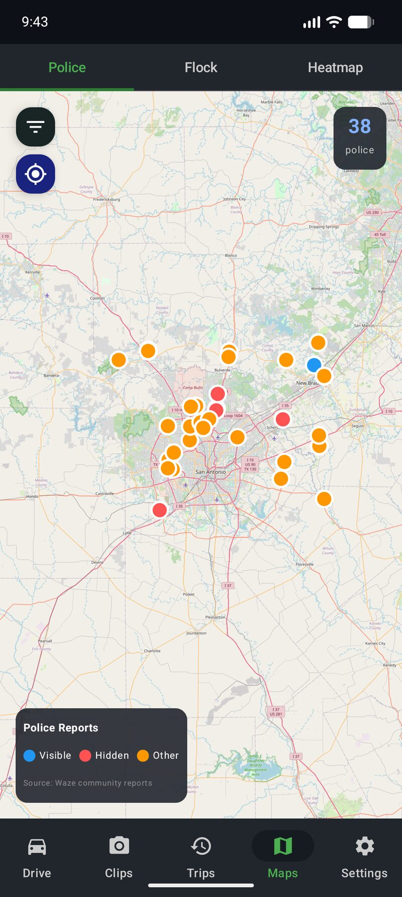

7 Best Speed Camera Alert Apps for Android in 2026 (Tested & Ranked)
A single speed camera ticket costs $150-300 depending on your state. Red light camera tickets run $50-500. Get two of those in a year and you have paid more than enough to justify caring about this topic. Speed camera enforcement is expanding across the US, and most drivers have no idea where these cameras are until the flash goes off in their rearview mirror.
A good speed camera alert app pays for itself the first time it warns you. I tested seven of the most popular options on Android to find out which ones actually work, which ones drain your battery, and which one does something none of the others can.

Quick Comparison
| App | Camera Database | Price | Offline | Dashcam |
|---|---|---|---|---|
| Phone Dashcam | 336,000+ | Free / $9.99 Pro | Yes | Yes |
| Radarbot | Large (global) | Free / subscription | Yes (paid) | No |
| Waze | Community only | Free | No | No |
| CamSam | Medium (EU focus) | Free / paid | Partial | No |
| Speed Camera Detector | Medium | Free / paid | Yes | No |
| TomTom AmiGO | Medium | Free | Yes | No |
| Google Maps | Community only | Free | No | No |
#1 — Phone Dashcam
The only speed camera app that is also a full dashcam
Free (Pro: $9.99 one-time — no subscription)
Phone Dashcam maps 336,000+ camera locations across the United States, including speed cameras, red light cameras, Flock Safety ALPR cameras, and police surveillance cameras. Alerts include audio warnings, vibration, the street name, and exact distance to the camera. You can filter the map by camera type to see exactly what is ahead on your route.
But here is what makes it different from every other app on this list: it is also a full-featured dashcam. Continuous loop recording, parking mode with motion detection, crash detection that auto-saves footage, Google Drive cloud backup, AI object detection, and live remote viewing. Every other speed camera app on this list does one thing. Phone Dashcam does all of them.
The free tier gives you the full dashcam with parking mode, crash detection, cloud backup, and AI detection. The Pro upgrade at $9.99 (one-time, not a subscription) unlocks the camera alert database.
Best for: Drivers who want camera alerts AND a dashcam in one app. Best value on the list.
Download on Google Play →#2 — Radarbot
Solid camera database with a clean interface
Free / Premium subscription ($3-5/month)
Radarbot is one of the most popular speed camera apps on Android with over 10 million downloads. It has a large global camera database, speed limit warnings, and a straightforward UI that shows cameras on a map with distance alerts. The free version gives you basic alerts, while the premium subscription adds offline maps, real-time community updates, and removes ads.
The main limitation is that Radarbot is purely a camera detector. No dashcam recording, no parking mode, no crash detection, no cloud backup. If all you want is camera alerts and nothing else, it does that job well. But if you want a dashcam too, you will need a second app running alongside it, which doubles your battery drain.
Best for: Drivers who only want camera alerts and already have a separate dashcam solution.
#3 — Waze
Great navigation, mediocre camera alerts
Free
Everyone knows Waze. It is a fantastic navigation app with the largest community-reporting network for traffic, police, and hazards. When someone reports a speed trap on Waze, every driver behind them sees the alert. That community power is genuinely useful.
The problem is that Waze only shows community-reported police positions. It does not have a fixed camera database. Speed camera locations, red light cameras, and ALPR cameras are not in Waze because those are permanent installations, not user reports. Community reports also expire quickly, so if nobody has driven that road recently, you get no warning. And Waze is a heavy app that absolutely destroys your battery because it is constantly rendering maps, processing traffic data, and running GPS navigation.
Waze is a great navigation app that happens to have some police alerts. It is not a dedicated speed camera app.
Best for: Drivers who already use Waze for navigation and want some bonus police alerts.
Best Phone Mounts for Dashcam Use
From $12.99#4 — CamSam
Strong in Europe, weaker in the US
Free with ads / Premium available
CamSam is a speed camera warning app with a solid community of users, particularly in Germany and other European countries where speed camera enforcement is aggressive. It provides real-time mobile speed camera alerts from the community plus a database of fixed cameras. The interface is clean and the alerts are reliable in its core markets.
The downside for US drivers is that CamSam's coverage is significantly thinner in North America. The community is smaller, the fixed camera database has gaps, and it lacks the specialized US camera types like Flock Safety ALPR. It is a good app in the right market, but if you are driving in the US, the coverage is not competitive with options that focus on the American camera network.
Best for: European drivers who want community-powered speed camera alerts.
#5 — Speed Camera Detector (Lelic)
Simple and lightweight
Free / Premium available
Speed Camera Detector by Lelic takes a no-frills approach. It shows speed cameras on a map, gives you audio warnings when approaching, and supports offline maps so it works in dead zones. The app is lightweight and does not drain your battery as aggressively as Waze or Google Maps.
The trade-off is limited coverage. The camera database is smaller than Radarbot or Phone Dashcam, especially for newer camera types like ALPR and Flock Safety. No dashcam features. No cloud backup. It does one thing in a simple way, which is fine if that is all you need.
Best for: Drivers who want a simple, lightweight speed camera app with minimal battery impact.
#6 — TomTom AmiGO
Navigation first, cameras second
Free
TomTom AmiGO is primarily a navigation app that includes speed camera warnings as a secondary feature. It has solid map data from TomTom's decades of mapping experience, speed limit displays, and camera alerts integrated into the navigation view. The community of 5 million+ users contributes real-time reports.
The issue is that it is a heavy, full navigation app. If you already use Google Maps or Waze for navigation, running AmiGO alongside them just for camera alerts does not make sense. And compared to dedicated camera apps, the alert database is not as comprehensive for US-specific camera types.
Best for: Drivers willing to switch their entire navigation app to get built-in camera alerts.
#7 — Google Maps
Basic speed trap reports, not a real camera app
Free
Google Maps now includes community-reported speed traps and police positions, similar to Waze (Google owns both). If you already use Google Maps for navigation, you will occasionally see speed trap warnings pop up on your route. That is better than nothing.
But Google Maps does not have a camera database. It does not show fixed speed camera locations, red light cameras, or ALPR cameras. The community reports are sparse compared to Waze, and the feature feels like an afterthought because it is one. Google Maps is a navigation app. It is not a speed camera app by any stretch.
Best for: People who use Google Maps anyway and want minimal extra awareness. Not a real alternative to a dedicated camera app.
What to Look for in a Speed Camera App
After testing all seven, here is what actually matters when choosing a speed camera alert app:
- Database size and type coverage. How many cameras are mapped? Does it include speed cameras, red light cameras, ALPR, and Flock Safety? A big number means nothing if it is all European cameras and you drive in Ohio.
- Offline mode. If the app needs a data connection to warn you, it fails on rural highways where cell coverage drops. Apps that cache the camera database locally work everywhere.
- Audio alerts with distance. A visual dot on a map is not helpful at 70 mph. You need an audio warning with the street name and distance so you do not have to take your eyes off the road.
- Dashcam integration. This is the killer feature that separates Phone Dashcam from everything else. Camera alerts are great, but if something happens on the road, you want footage. Running two separate apps (one for cameras, one for dashcam) doubles your battery drain and complexity. One app that does both is objectively better.
The bottom line: If you just want camera alerts, Radarbot is solid. If you want camera alerts plus a dashcam plus parking mode plus cloud backup in one app with no subscription, Phone Dashcam is the clear winner.
Frequently Asked Questions
Are speed camera apps legal?
Yes, speed camera alert apps are legal in all 50 US states. They use GPS databases to warn you about fixed camera locations, which is not the same as a radar detector. Some states restrict windshield-mounted devices, but vent mounts are legal everywhere. These apps simply tell you where cameras are, which is public information.
Do speed camera apps work offline?
Some do. Apps that use a cached camera database (like Phone Dashcam and Radarbot) work offline because the camera locations are stored on your phone. Apps that rely purely on community reports (like Waze) need a data connection to receive alerts. If you drive through areas with poor cell coverage, offline support matters.
Can a speed camera app replace a radar detector?
For camera-based enforcement (speed cameras, red light cameras, ALPR), yes. Camera apps have databases of fixed locations that a radar detector cannot detect because cameras do not emit radar signals. However, for active police radar and laser speed guns, a hardware radar detector is still needed since phones cannot detect radar signals. Many drivers use both.
What is the best free speed camera app?
Phone Dashcam offers a free tier that includes full dashcam recording, parking mode, crash detection, and cloud backup. The Pro upgrade ($9.99 one-time, no subscription) adds 336,000+ camera alerts. For purely free camera alerts, Waze includes community-reported police positions at no cost, though it lacks a fixed camera database.
Camera Alerts + Dashcam in One App
Phone Dashcam is free to download. Get dashcam recording, parking mode, crash detection, and cloud backup at no cost. Upgrade to Pro for 336,000+ speed camera and police alerts. No subscription. One price. Done.
Download Phone Dashcam Free